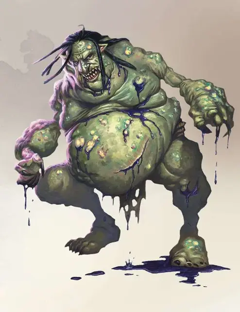

Ядовитый тролль
Venom Troll
Большой Великан (Тролль), хаотично-злой

Класс Доспеха 15 (природный доспех)
Хиты 94 (9к10 + 45)
Скорость 30 футов
| мод | спас | ||
|---|---|---|---|
| СИЛ | 18 | +4 | +4 |
| ЛОВ | 13 | +1 | +1 |
| ТЕЛ | 20 | +5 | +5 |
| мод | спас | ||
|---|---|---|---|
| ИНТ | 7 | −2 | −2 |
| МДР | 9 | −1 | −1 |
| ХАР | 7 | −2 | −2 |
Навыки Восприятие +2
Иммунитет к урону яд
Иммунитет к состояниям отравление
Чувства тёмное зрение 60 футов, пассивное Восприятие 12
Языки Великаний
Опасность 7 (2900 опыта)
Бонус мастерства +3
Среда обитания Болото, Лес, Подземье
Особенности
Тонкий нюх. . Тролль совершает с преимуществом проверки Мудрости (Восприятие), основанные на обонянии.
Ядовитый всплеск. Когда тролль получает урон любого типа помимо психической энергии, каждое существо в пределах 5 футов от него получает 9 (2к8) урона ядом.
Регенерация. . Тролль восстанавливает 10 хитов в начале каждого своего хода. Если он получает повреждения огнём или кислотой, регенерация не срабатывает в начале его следующего хода. Тролль умирает, если начинает свой ход в 0 хитах и не восстанавливает их регенерацией.
Действия
Мультиатака. Тролль совершает три атаки: одну укусом и две когтями.
Укус. Рукопашная атака оружием: +7 к попаданию, досягаемость 5 футов, одна цель. Попадание: 7 (1к6 + 4) колющего урона, плюс 4 (1к8) урона ядом, после чего существо становится отравленным до начала следующего хода тролля.
Когти. . Рукопашная атака оружием: +7 к попаданию, досягаемость 5 футов, одна цель. Попадание: 11 (2к6 + 4) рубящего урона, плюс 4 (1к8) урона ядом.
Ядовитые брызги (перезарядка 6). Тролль раздирает себя когтями, брызгая ядом в 15-футов конусе. Тролль получает 7 (2к6) рубящего урона (этот урон не может быть снижен никаким способом). Каждое существо, попавшее в конус, должно пройти спасбросок Телосложения Сл 16. В случае провала существо получает 18 (4к8) урона ядом и становится отравленным на 1 минуту. В случае успеха существо получает половину этого урона и не получает эффект отравления. Отравленное существо может повторять спасбросок в конце каждого своего хода, завершая эффект в случае успеха.
Описание
Тролль, получивший крупные дозы яда, может мутировать в ядовитого тролля. Впитавшийся яд наполняет его кровь и плоть, он же течёт из его пор, покрывая клыки и когти. Эти существа особенно опасны в ближнем бою, потому что яд сочится из их плоти и течёт из каждой полученной раны.